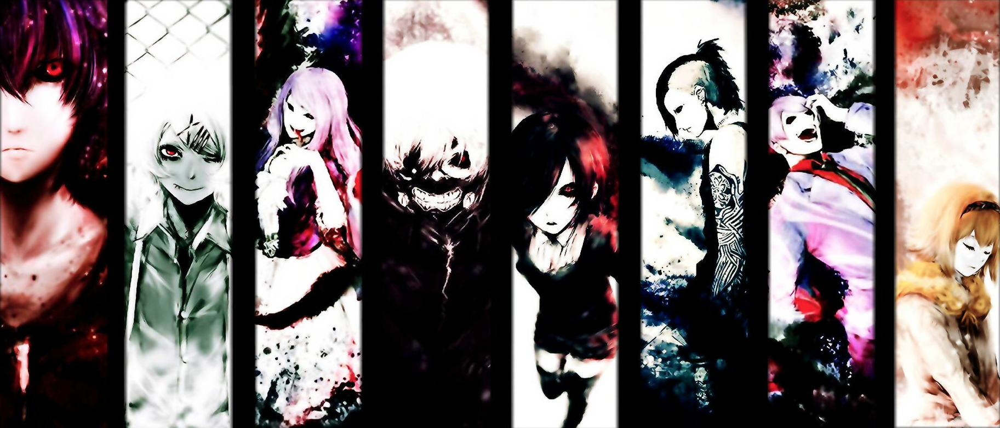

About Kaneki
Kaneki Ken is a main protagonist of the manga created by Sui Ishida. He is living in Tokio, Japan in a world where besides human, race of ghouls does exist. As a result of the accident Kaneki Ken, beforehand an ordinnary human student, becomes a hybrid of a man and ghoul alike. This and events that occur next push him into middle of the ongoing conflict between humans and ghouls.
Characters of the Tokio Ghoul
Ken Kaneki's Characteristics
- World's first artificially created hybrid of a man and a ghoul
- Struggling between his innocent and good character and cruel, violent world which he is now a part of
- His hair changes color throughout the story and it's awesome
Kaneki's Ken Friends
Kaneki meets awful many very interesting characters both ghouls and humans (click on links belowe to read more):